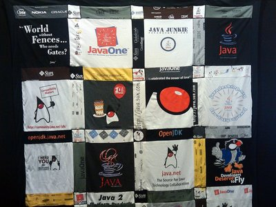

Away Mission: VMworld, IDF, OOW
VMworld 2010
You can still catch the end of VMworld 2010 US, which is also just weeks ahead of VMworld Europe in October. The conference theme is "Virtual Roads, Actual Clouds" and will feature more than 170 unique breakout sessions which focus on reducing IT complexity and enabling IT as a Service through virtualization and cloud computing. If that piques your techie interest, consider catching live and on-demand keynote presentations available via webcast at http://www.vmware.com/go/vmworld-general-sessions.
VMware will host its second Technology Exchange track for developers as part of VMworld. This three-day event is open to all developers. With beginner and advanced levels, these sessions provide in-depth views of developer tools, APIs, best practices, and, of course, cloud architectures.
This is a premium conference, as the registration rates show. Expect a great conference bag, great grub, interesting vendors with cool swag at the Expo, and interesting people sitting next to you. The VMworld 2010 agenda is available at http://www.vmworld.com/community/conferences/2010/agenda/.
I couldnt find a public archive for VMworld 2009 presentations, but here
is a link for community videos, which includes the video podcasts from the
VMworld 2009 Expo floor featuring VMware technical experts:
http://www.vmworld.com/community/video/
The fifth link page there contains short presentations like "NetApp VMware
View Integration" which is also at
http://www.vmworld.com/thread/3188?tstart=120.
Intel Developer Forum
Coming up next in mid-September is the Intel Developer Forum (IDF). This conference features more than 150 technical sessions presented by Intel and industry experts. The tracks cover topics like Cloud Computing, Eco-Technology, Extending Battery Life, and High Performance Computing (HPC). there are also product tracks on Intel processors, solid-state drives, visual computing and new SuperSpeed USB (USB 3.0) standard.
Beside the informal Chalk Talks from previous IDFs with Intel experts, IDF 2010 will also have Poster Chats, informal gatherings where researchers and developers show the directions of their latest projects giving attendees the opportunity to hear about technology still early in the development stage. This is both a hardware and a software conference, and the sessions vary greatly in technical depth. Some are expert-only, some are product-oriented and may be presented by Intel parnters - look at the talk summaries and the speaker company information.
Go to http://www.intel.com/idf/ to see the agenda and/or register.
I couldnt find a link for the main content from IDF 2009, but IDF 2009 press site has links to the keynotes and selected technical presentations here:
http://www.intel.com/pressroom/kits/events/idffall_2009/video.htm
And here is a similar link for content from IDF Beijing 2010 in April:
http://www.intel.com/idf/library/library-beijing-2010.htm
In particular, let me point to the IDF 2009 Day 2 Keynote from Dadi Perlmutter on the total mobile experience. He showed the die-size progression for mainline processors and also for the low-power (in both senses) Atom chip family down to 15 nm. Then he discussed the dream criteria for mobile devices, which are all on Intels product map, natch:
- built-insecurity (so thats why they bought McAfee)
- ease of use and networking
- long battery life
- and all in a lightweight package at a low cost...
Didi and Mooley Eden did a chip booster session, starting with the high end Core i7 quad-core. Right, not exactly a chip for all-day battery use, but he did highlight how core idling down to 2 and even 1 core (in the newest processors) could drop power consumption significantly. Basically, the quad-core Core i7 had similar performance at 45 watts to the old single core Xeon chip which burned 150 watts. Thats one core to one core.
Check out these images from that keynote:
http://intelstudios.edgesuite.net/idf/2009/sf/keynote/090923_dp/orig_Slide31_1.jpg
http://intelstudios.edgesuite.net/idf/2009/sf/keynote/090923_dp/orig_Slide50_1.jpg
Oracle Open World, and JavaOne
Finally, Oracle Open World (OOW) arrives in late-September, This year, OOW rolls in the famous JavaOne conference to its stable of other user conferences under the OOW umbrella. That could mean several thousand more developers attending an event which already has the population of a small city, all struggling to to get to sessions at both JavaOne and Oracles own Develop mini-conference as well as sessions in other parts of downtown SF. This could be interesting. OOW is taking on the dimensions of COMDEX, but without the noisey slot machines.
This years OOW is reported to have over 1800 sessions, including hundreds of labs. And there could be almost 50,000 people competing with you for a seat - just like COMDEX.
Expect some Open Source controversy over Oracles legal actions against Google over Java patents at the 2010 Oracle Open World. Apparently, these concerns transcend Google's creation of its own JVM - the Dalvek VM - to avoid licensing and certification issues. So its "Clash of the Titans," San Francisco Bay Area style, and some of that may creep into the conference sessions as well as the deluge of Twitter posts.
In 2009, the big announcement was version 2 of the Oracle eXaData Database Machine, based on Sun hardware. And the hot topic was how Oracle would shepherd - or dispose of - Sun's IP and product lines. Oracle came out with strong support for all of Sun's major product lines, especially Java and MySQL. These topics will assuredly be visited again this year.
Since Oracle Open World is partly a customer appreciation event, the food and conference bag are better than average. Of course, the cost without discounts is $2500. You'd want something sensational for that. In 2009, the conference party included performances by AeroSmith, 3 Dog Night, and Roger Daltry. Everybody felt like a VIP.
The 2009 OOW archive is not currently available, but the 2008 archive is.
This link lists all archives currently available:
http://wiki.oracle.com/page/Oracle+OpenWorld
Highlights from the 2009 keynotes and some of the OOW podcasts can be found here:
http://www.livestream.com/openworldlive and http://www.oracle.com/us/openworld/034626
Recently there were several OTN Virtual Developer Days (#OTNVDD) in the US, India and China, but the presentations and labs are still available on-line. If you are a night owl, you can still register for the OTNVDD scheduled on September 2nd for Russian developers. Oracle provides over 2 GB of compressed VMDK files - this requires a machine with 2 GB of RAM and at least 8 GB of free physical disk space. You can host all the provided VM images with VirtualBox.
I'm sure that some of these items, or items similar to them, will be included in
OOW 2010. Get access to the VDD materials here:
http://wiki.oracle.com/page/OTN+Virtual+Developer+Day.
Comparing the varied Virtualization strategies at these 3 events will be interesting. VMware and Intel are partners, but so are Red Hat and Intel. The Oracle/Sun conglomerate is also an Intel partner, but Oracle is a proponent of Xen while Red Hat is staunchly behind KVM. Maybe with Oracle battling both Google and the whole Open Source community, Intel is the one to watch.
Talkback: Discuss this article with The Answer Gang
Howard Dyckoff is a long term IT professional with primary experience at
Fortune 100 and 200 firms. Before his IT career, he worked for Aviation
Week and Space Technology magazine and before that used to edit SkyCom, a
newsletter for astronomers and rocketeers. He hails from the Republic of
Brooklyn [and Polytechnic Institute] and now, after several trips to
Himalayan mountain tops, resides in the SF Bay Area with a large book
collection and several pet rocks.
Howard maintains the Technology-Events blog at
blogspot.com from which he contributes the Events listing for Linux
Gazette. Visit the blog to preview some of the next month's NewsBytes
Events.


{kind=link}
{kind=link}